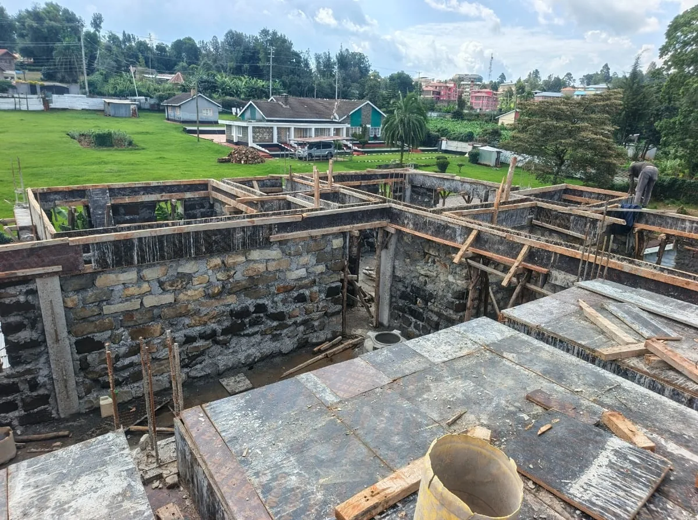

Carren Anyoka
B.A. Business Administration
Carren leads Borabu Builders’ major operations and corporate affairs, continuing the company’s leadership following the retirement of founder George Anyoka in 2016.
Borabu Builders' current company history traces the business to 1988 and a foundation in practical construction delivery.
Borabu Builders Company Limited was founded in 1988 in Kericho County, originally operating as Anyoka Borabu Builders, a sole proprietorship.
Over time, the company expanded its construction capability across residential, commercial, educational, industrial and public-service facilities, alongside water works, roads, structural steel, boreholes, repairs and renovations.
The company's current public website references work with major tea-sector organizations, private-sector clients and Government of Kenya departments and agencies.

Our strongest story is not a slogan. It is the ability to mobilize construction capability across different project types and environments, with experience that has accumulated over decades.
A business history stretching back to 1988.
Capabilities across buildings, water, roads, steel and boreholes.
Established presence in Kericho County.
Experience spanning private and public-sector environments.
Borabu Builders brings together leadership, technical expertise and hands-on construction experience across project planning, engineering, site supervision and fabrication.
B.A. Business Administration
Carren leads Borabu Builders’ major operations and corporate affairs, continuing the company’s leadership following the retirement of founder George Anyoka in 2016.
B.A. Land Economics · University of Nairobi
Samuel leads project planning and execution, technical personnel, and coordination with clients, consultants and project development teams. He joined Borabu Builders in 2001.
Diploma in Civil Engineering · Kisii National Polytechnic
Peter supports works programming, project supervision and site personnel coordination, while helping ensure adherence to Safety, Health and Environment policies on construction sites.
Craft Certificate · Rift Valley Institute of Science & Technology
Phillip oversees timber and metal fabrication works in the workshop, with a focus on quality and adherence to the firm’s Safety, Health and Environment policies.
Craft Certificate · Kisii National Polytechnic
Sanfan provides close supervision of the various trades on site, bringing practical experience from engagements across both private and public-sector environments.
Borabu Builders Company Limited is registered with Kenya’s National Construction Authority as an NCA3 contractor for both Building Works and Road Works.
The current registration certificates are valid to 31 July 2028, supported by annual practising licences valid from 1 August 2026 to 31 July 2027.
Website previews are watermarked for verification. Official copies may be provided directly by Borabu Builders upon request.
Share the scope, location and timing. We'll start with a conversation.